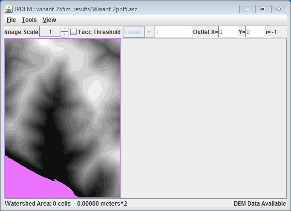

+
B.6 | JPDEM User-Specified Map Borders
Overview (Tutorial B.6 - JPDEM User-Specified Map Borders)
JPDEM's experimental ("EXP") and enhanced experimental ("EEX") flat-processing algorithms experience significant runtime slowdown when the DEM map they are applied to contains large waterbodies or other uniform-elevation areas of cells along one or more edges of the map.
This tutorial explains how to create a border mask that specifies these areas as being part of the map border (i.e. ignored during flat-processing and off-limits for delineation thereafter) can considerably speed up the flat-processing process.
Any DEM grid .asc file loaded into JPDEM must have its computational domain set prior to flat-processing. This is normally done automatically, when you use JPDEM's "Load Map File Data" --> "Load As DEM File menu item".
Setting the computational domain involves the following:
- The loaded DEM grid is prohibited from containing any NODATA_value(s).
- A default, single-cell-width border is imposed on the DEM grid.
However, you can instead load a DEM (or any) grid .asc file using JPDEM's “Load Map File Data” --> “Load As Raw Map File” menu item, and in this case the grid .asc file is loaded as-is, without performing the steps to set its computational domain. A DEM grid .asc file loaded via the “Raw” menu item can subsequently be flat-processed if its computation domain is set, but to do this, the user must load a valid Border Mask Map .asc file.
The BorderMask Map .asc file must have the same column and row dimensions as the loaded DEM grid .asc map, and its cell data must consist solely of integer “1” and “0” values. Border cells must have the value “0” and interior cells must have the value “1”.
Running the “Load Map File Data” --> “Load Border Mask” menu item will load border mask data from the specified file, then set the computational domain of the currently-loaded DEM grid .asc file based on the bitmask of border/interior cells from the border mask map file.
Why Are User-Specified Borders Useful?
JPDEM's experimental ("EXP") and enhanced experimental ("EEX") flat-processing algorithms experience significant runtime slowdown when the DEM map they are applied to contains large, uniform-elevation areas of cells along one or more edges of the map.
Creating a border mask that specifies these areas as being part of the map border (i.e. ignored during flat-processing and off-limits for delineation thereafter) can considerably speed up the flat-processing process.
Important Limitations
- You can only load a border mask map file for a DEM map that was raw-loaded.
- Your border mask map file must (at a minimum) specify the top and bottom rows, and the left-most and right-most columns of the mask as border cells.
- The border mask must encode border cell values as “0”, all other cells as “1”.
- You cannot load a second border mask map file for a given DEM file. Once a DEM map's computational domain is set, it cannot be set again. To use a new border mask, re-load the original DEM file and then load the new border mask.
An Overview / Example of Using a Border Mask During Flat-Processing
For the following overview, the example data is:
- A DEM file (“Winant_2pnt5.asc”)
- A prepared border mask (“Winant_2pnt5_dmMask.asc”)
- A stream dredge channel guide (“Winant_2pnt5m__watershedDredgeMap_Corrected.asc”)
Step 1: Load the DEM file as Raw Data via the “Load Map File Data” --> “Load As Raw Map File” menu item.
Step 2: Load the Border Mask via the “Load Map File Data” --> “Load Border Mask” menu item.
At this point, we can see the user-specified border by highlighting cells that are < 0 meters in elevation. (For this particular map, the lowest elevation prior to setting the computation domain was zero meters. After loading the border mask and setting the computation domain, all border cells will have been “pushed down” below 0 meters in elevation.) In the image below, border cells are highlighted “pepto-pink”, while interior cells are shown with contour-rendering greyscale to make the contrast clear:
Notice that the top and bottom rows, and the left-most and right-most columns are part of the border. This was specified in the border mask file ("Winant_2pnt5_dmMask.asc") and is required (per the prior Limitations list).
Step 3: (Optional)
Load a stream burn-in dredge channel guide map via the "Load Stream File Data" menu item
This is not a necessary step, however, if you plan to perform a stream channel burn-in prior to flat- processing, you must load the data and run the channel-cutter on paired (DEM + border mask) + stream channel guide at this point (i.e. after raw-loading the DEM and loading the border mask, and before running the flat-processor).
Step 4:
Run the EXP or EEX flat-processing algorithm from the Tools menu.
(i.e. "Tools" --> "Flat-Process DEM Data (Experimental)" or "Tools" --> "Flat-Process DEM (Enhanced
Experimental)"
Note: If you have performed a stream burn-in, do not attempt to flat-process the DEM with either the Standard or Alternate flat-processing algorithms.
If you have not performed a burn-in (Step 3), then it is possible -- but still not recommended -- to run either the Standard or Alternate flat-processing algorithms, however it is unlikely that they will produce better results than either the EXP and EEX algorithms.
Here's what our example looks like after flat-processing using the EEX algorithm.
Cells colored red meet the Facc Threshold indicated on the GUI, Cells colored green are channel guide cells that do not meet the Facc Threshold, Cells colored yellow-orange are channel guide cells that meet the Facc threshold.
NOTE: Please see JPDEM tutorial B.7, "JPDEM User-Specified Border Mask Example", which provides a more detailed example of how to create a DEM border mask that encompasses large waterbodies at the edge of a DEM. By including these flat features as part of the map border, JPDEM will ignore them during flat-processing of raw DEMs, considerably speeding up the flat-processing process.